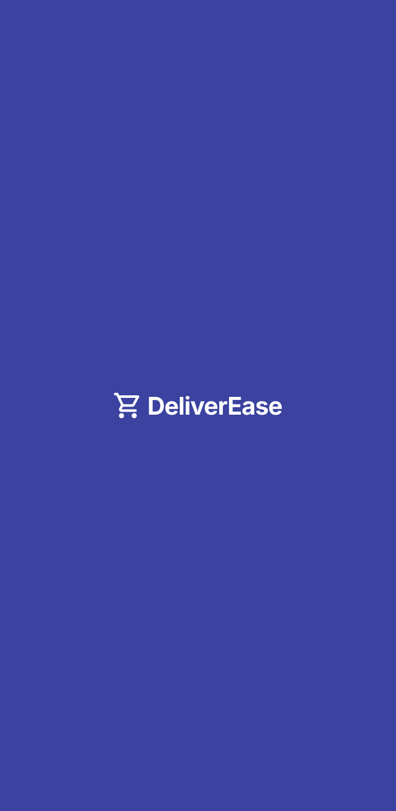
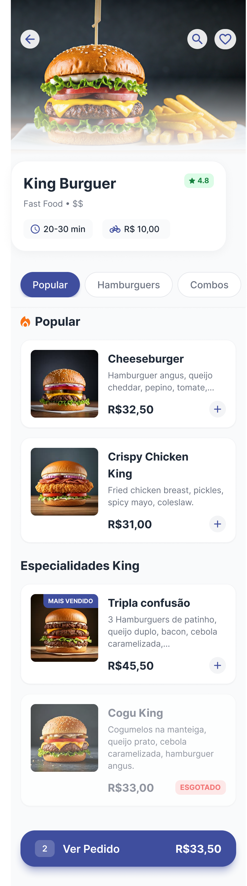
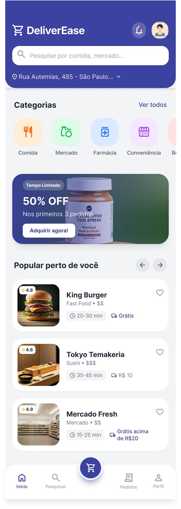
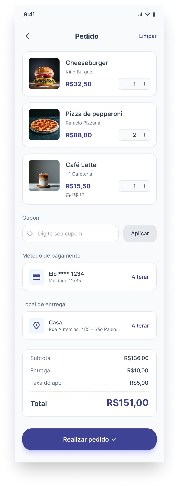
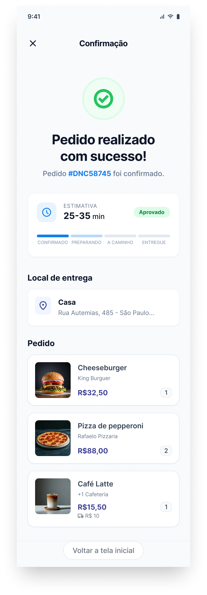

Como a fragmentação entre apps de delivery virou o ponto de partida para um estudo de UX sobre consolidação, carrinho unificado e checkout sem atrito.





Quem nunca ficou com três apps abertos ao mesmo tempo tentando montar o pedido perfeito? Um restaurante no iFood, bebida no Rappi, sobremesa no Uber Eats — cada um com taxa de entrega própria, tempo estimado diferente e processo de checkout independente.
Esse comportamento é tão normalizado que virou invisível. Mas a fricção existe: apps diferentes significam contas diferentes, cartões diferentes, endereços para confirmar três vezes, e notificações de três deliverys chegando em horários desencontrados.
O DeliverEase nasceu como um exercício de "e se?". E se existisse um único lugar para montar, revisar e confirmar pedidos de múltiplos restaurantes, com um checkout só e uma entrega consolidada?
Usuários alternam entre 2 a 4 apps diferentes numa mesma semana de pedidos
Confirmação de endereço e pagamento refeita a cada pedido, em cada app
Itens do mesmo jantar chegando em momentos diferentes sem visibilidade unificada
Cada app promove seus próprios parceiros; a busca fica confinada ao catálogo de cada plataforma
O processo começou mapeando os principais concorrentes e o comportamento real dos usuários. Além do benchmark, conduzi entrevistas informais com 8 pessoas que pedem delivery pelo menos uma vez por semana — de universitários a famílias com filhas e filhos pequenos.
Analisei os principais players do mercado brasileiro: iFood, Rappi, Uber Eats, Google Maps (para descoberta de restaurantes) e Keeta, que entrou recentemente no Brasil com proposta de taxa zero. O foco foi entender como cada um resolve — ou não resolve — o problema de pedidos de múltiplas origens.
"Todos os apps resolvem bem o pedido num único restaurante. Nenhum foi pensado para quem pede em mais de um lugar ao mesmo tempo."
A home foi desenhada para refletir como as pessoas realmente escolhem o que pedir: primeiro o desejo (comida, mercado, farmácia), depois o lugar. A barra de busca fica em destaque porque descoberta é o ponto de entrada mais comum.
A seção "Popular perto de você" traz restaurantes ranqueados por avaliação e proximidade — sem empurrar parceiros patrocinados para cima. O destaque de frete grátis aparece no card do restaurante, não como banner, para não interromper o fluxo de escolha.
Home — categorias, busca e restaurantes próximos
A primeira ação esperada do usuário é buscar o que quer comer. A barra de pesquisa fica no topo da home, acima das categorias, para encurtar esse caminho.
O endereço de entrega aparece logo abaixo da busca, com seta de edição. Endereço errado é uma fonte clássica de frustração — tornar isso visível antecipa o problema.
Avaliação, tipo de culinária, faixa de preço, tempo estimado e taxa de entrega numa linha. O usuário decide sem precisar entrar no restaurante primeiro.
A tela de restaurante segue uma hierarquia visual clara: foto do prato principal no topo ocupa bastante espaço para criar contexto e desejo. Abaixo, as informações do restaurante sem poluição visual. As abas de categorias (Popular, Hamburguers, Combos) permitem navegar no cardápio sem rolar infinitamente.
A decisão de design mais deliberada aqui foi o tratamento de itens esgotados: eles aparecem na listagem, mas com visual acinzentado e tag "Esgotado" bem visível — em vez de simplesmente sumirem do cardápio. Isso evita a frustração de não encontrar um item específico e ter que perguntar se ainda tem.
Restaurante — cardápio, categorias e item esgotado
Uma imagem de prato de alta qualidade no topo cria contexto imediato. O usuário sabe o que vai encontrar antes de ler uma palavra.
Cardápios longos são problemas de navegação, não de scroll. Abas fixas permitem pular entre seções sem perder o contexto do restaurante.
Esconder itens indisponíveis cria a sensação de cardápio incompleto e gera dúvida. Mostrar com estado visual diferenciado é mais honesto com o usuário.
A tela de carrinho é onde a proposta central do DeliverEase se concretiza. Itens de restaurantes diferentes convivem no mesmo pedido, com seus respectivos preços e origens identificados. O resumo financeiro aparece transparente: subtotal, entrega e taxa do app separados, sem surpresa na hora de confirmar.
A confirmação fecha o loop com clareza: número do pedido, status visual com progresso (Confirmado → Preparando → A caminho → Entregue), endereço e resumo dos itens. O usuário não precisa sair da tela para saber onde está o pedido.
Carrinho unificado
Confirmação do pedido
Cada item mostra de qual restaurante veio logo abaixo do nome. Em pedidos com múltiplas origens, isso evita confusão na revisão antes de confirmar.
Subtotal, entrega e taxa do app discriminados antes do total. O usuário sabe exatamente o que está pagando — sem taxa que aparece só na última tela.
A barra de status (Confirmado → Entregue) aparece logo após a confirmação, com estimativa de tempo. O usuário entra em modo de espera informada, sem precisar abrir outra tela.
Projetos de estudo têm uma liberdade que projetos reais não têm: você pode partir de um "e se?" e ir até onde o raciocínio de design levar, sem constraint de tech, business ou roadmap. Mas essa liberdade exige disciplina — é fácil cair no modo de "só resolver o visual" sem questionar se o problema merece ser resolvido desse jeito.
A parte mais difícil não foi desenhar as telas. Foi resistir a resolver tudo de uma vez — e escolher qual problema tinha mais evidência para ser o foco.
O benchmark mostrou que a consolidação de pedidos multi-restaurante é um espaço não explorado pelos players atuais — o que justifica a hipótese do projeto, mas também significa que não há referência de sucesso comprovada.
Parece simples na tela, mas colocar itens de restaurantes diferentes num mesmo carrinho levanta questões reais: e se um restaurante cancelar? Como fica a estimativa de entrega? O design precisa antecipar esses cenários de erro.
Fazer os dois papéis trouxe clareza: a visão de produto ajudou a priorizar o fluxo de checkout como o core do produto, e a visão de UX garantiu que esse fluxo fosse comunicado com clareza nas telas.
Um teste de usabilidade com o protótipo navegável validaria se a proposta do carrinho unificado é intuitiva ou gera confusão. O modelo de negócio (como cobrar dos restaurantes) seria o próximo eixo a explorar.